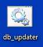
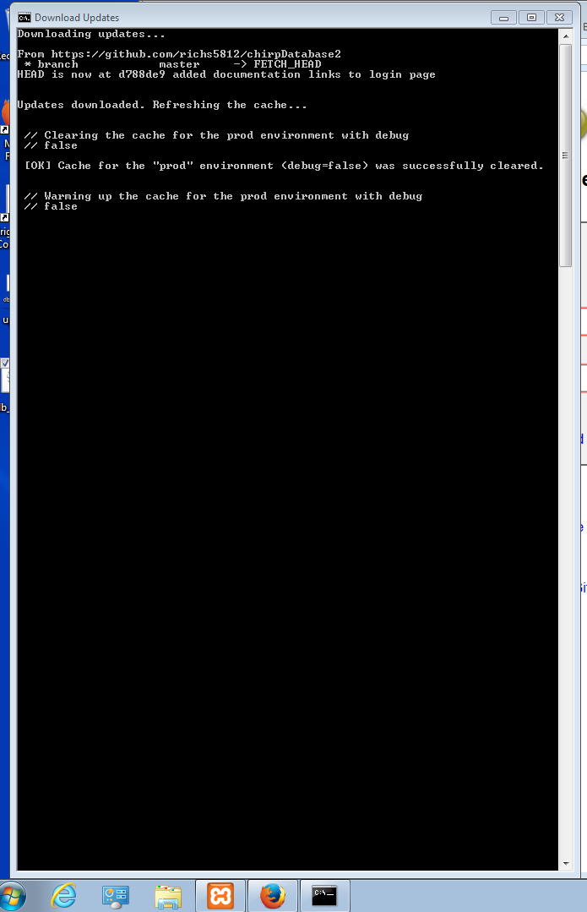
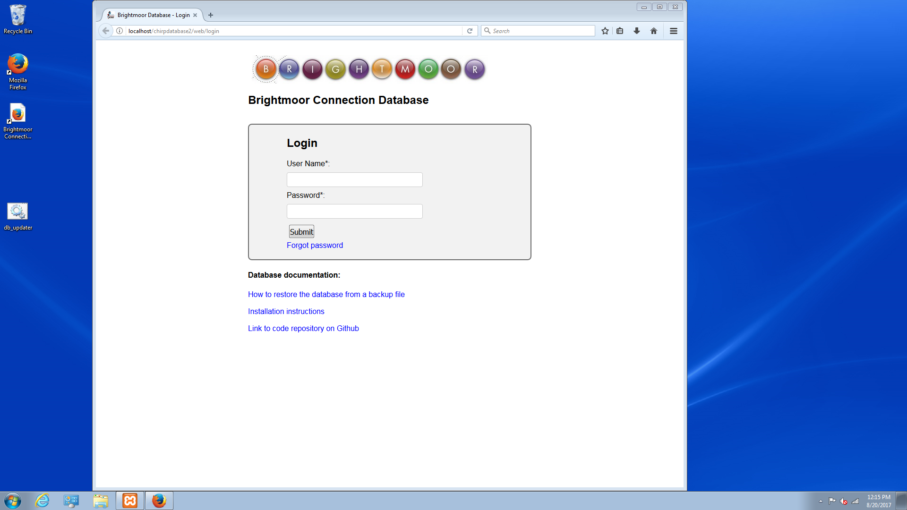

Brightmoor Connection Database Documentation
How to download and install updates to the database
All you need to do is double click the database updater script on the desktop:
The updater script will run...
...then open the database once complete:
That's it! You should see the updates applied when you use the database.
If the updater script is ever lost or deleted by accident, the code can be found here.